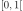
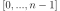
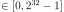

RandomGenerator¶
- class RandomGenerator(*args, **kwargs)¶
Uniform random generator.
Refer to Uniform Random Generator.
The random generator of uniform(0,1) samples is based on the DSFTM (Double precision SIMD oriented Fast Mersenne Twister) algorithm.
Methods
Generate(*args)Generate a pseudo-random vector.
GetState()Get the state of the random generator.
IntegerGenerate(*args)Generate a pseudo-random integer.
SetSeed(seed)Set the seed of the random generator.
SetState(state)Set the state of the random generator.
- __init__(*args, **kwargs)¶
- static Generate(*args)¶
Generate a pseudo-random vector.
- Parameters
- sizepositive int
Number of realizations required. When not given, by default it is equal to 1.
- Returns
- numbersfloat,
Point Pseudo-random numbers uniformly distributed over .
- numbersfloat,
Examples
>>> import openturns as ot >>> ot.RandomGenerator.SetSeed(0) >>> print('%.6f' % ot.RandomGenerator.Generate()) 0.629877 >>> print(ot.RandomGenerator.Generate(2)) [0.882805,0.135276]
- static GetState()¶
Get the state of the random generator.
- Returns
- particularState
RandomGeneratorState State of the random generator.
- particularState
- static IntegerGenerate(*args)¶
Generate a pseudo-random integer.
- Available usages
IntegerGenerate(n)
IntegerGenerate(size, n)
- Parameters
- npositive int
Upper bound of the interval where the pseudo-random integers are.
- sizepositive int
Number of integers to generate. When not given, by default it is equal to 1.
- Returns
- integerint,
UnsignedIntegerCollection Pseudo-random integers uniformly distributed over .
- integerint,
Examples
>>> import openturns as ot >>> ot.RandomGenerator.SetSeed(0) >>> print(ot.RandomGenerator.IntegerGenerate(30)) 24 >>> print(ot.RandomGenerator.IntegerGenerate(5, 30)) [26,21,21,22,26]
- static SetSeed(seed)¶
Set the seed of the random generator.
- Parameters
- nint 
Notes
This method fixes a particular state of the random generator algorithm thanks to the seed
 . The seed of the random generator is automatically
initialized to 0 when a session is launched.
. The seed of the random generator is automatically
initialized to 0 when a session is launched.
- static SetState(state)¶
Set the state of the random generator.
- Parameters
- particularState
RandomGeneratorState State of the random generator.
- particularState
Notes
This method fixes the entire state of the random generator algorithm thanks the specification of the entire state particularState usually previously obtained thanks to the
GetState()method.